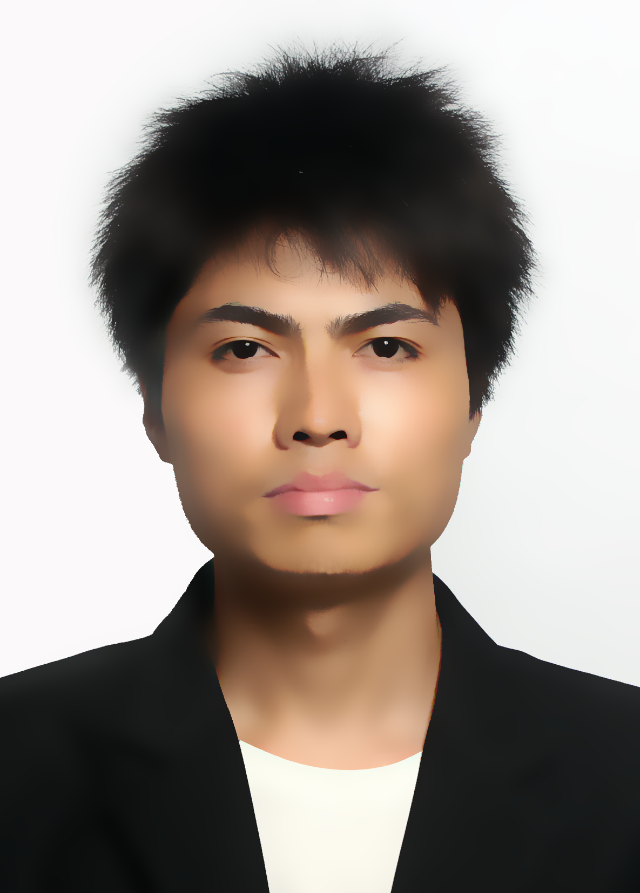
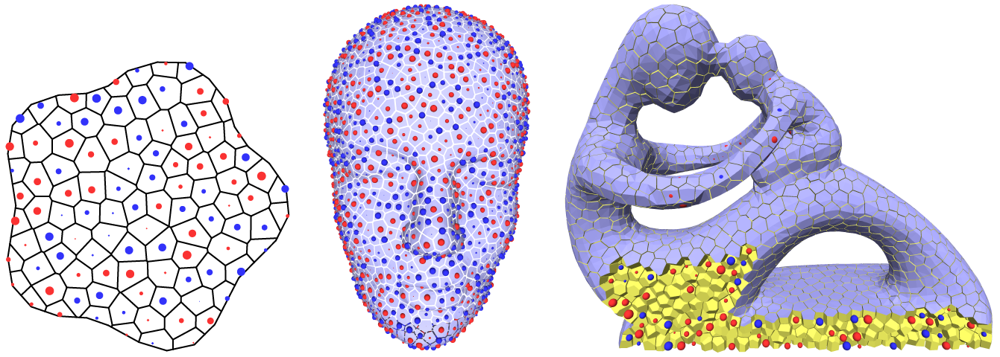
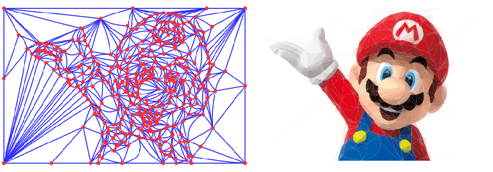
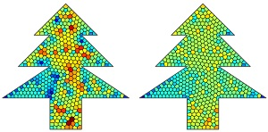
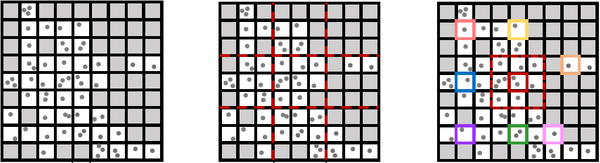
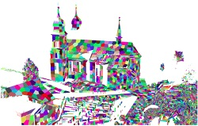
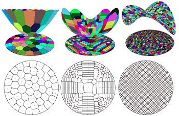
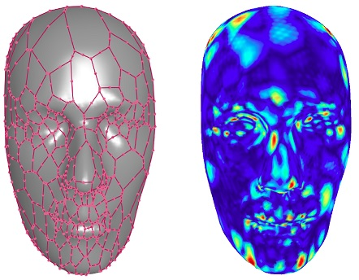
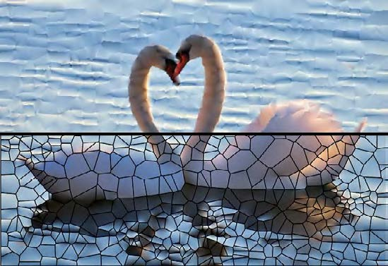
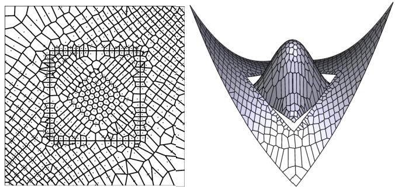

|  |
肖艳阳 Yanyang XIAOLecturer 硕导 |
|
Affiliations:
Research interests:
Email:
xiaoyanyang@ncu.edu.cn |
2021.01-now, Lecturer, Department of Computer Science, Nanchang University
2018.10-2019.10, China Scholarship Council-Joint PhD Program, Carnegie Mellon University
Supervisor: Prof. Yongjie Jessica ZHANG
2016.09-2020.12, PhD, Department of Computer Science, Xiamen University
Supervisors: Prof. Zhonggui CHEN,
Prof. Cheng WANG
2015.07-2016.07, Engineer, Xiamen Branch of Gaode Information Technology Co. Ltd., Alibaba Group
2012.09-2015.06, MEng, Department of Computer Science, Xiamen University
Supervisor: Prof. Zhonggui CHEN
2008.09-2012.06, BEng, College of Mechanical and Vehicle Engineering, Hunan University
2023.07-2026.06 Young Talent Cultivation and Innovation Fund of Nanchang University PI
2022.01-2024.12 National Natural Science Foundation of China PI
2018.06 Best Paper Award 1st Place Solid and Physical Modeling 2018
|  |
Meshless Power Diagrams Yanyang Xiao, Juan Cao, Shaoping Xu, Zhonggui Chen* Computers & Graphics (Proc. SMI), 2023, 114: 247-256 [DOI] [paper] [code] |
|  |
Image Representation on Curved Optimal Triangulation Yanyang Xiao, Juan Cao, Zhonggui Chen* Computer Graphics Forum, 2022, 41(6): 23-36 [DOI] [paper] [code] |
| TCB-Spline-Based Image Vectorization Haikuan Zhu, Juan Cao*, Yanyang Xiao, Zhonggui Chen, Zichun Zhong, Yongjie Jessica Zhang ACM Transactions on Graphics, 2022, 41(3), Article No.34: 1-18 [DOI] |
|
|  | Quadratic Serendipity Element Shape Functions on General Planar Polygons Juan Cao*, Yi Xiao, Yanyang Xiao, Zhonggui Chen, Fei Xue, Xiaodong Wei, Yongjie Jessica Zhang Computer Methods in Applied Mechanics and Engineering, 2022, 392: 114703 [DOI] |
|  | GPU-based Supervoxel Segmentation for 3D Point Clouds Xiao Dong, Yanyang Xiao, Zhonggui Chen*, Junfeng Yao, Xiaohu Guo Computer Aided Geometric Design (Proc. GMP), 2022, 93: 102080 [DOI] |
|  | Merge-Swap Optimization Framework for Supervoxel Generation from Three-Dimensional Point Clouds Yanyang Xiao, Zhonggui Chen*, Zhengtao Lin, Juan Cao, Yongjie Jessica Zhang, Yangbin Lin, Cheng Wang Remote Sensing, 2020, 12(3): 473 [DOI] |
|  | Optimal Power Diagrams via Function Approximation Yanyang Xiao, Zhonggui Chen, Juan Cao*, Yongjie Jessica Zhang, Cheng Wang Computer-Aided Design (Proc. SPM; Best Paper Award 1st Place), 2018, 102: 52-60 [DOI] [paper] |
|  | Functional Data Approximation on Bounded Domains using Polygonal Finite Elements Juan Cao, Yanyang Xiao, Zhonggui Chen*, Wenping Wang, Chandrajit Bajaj Computer Aided Geometric Design, 2018, 63: 149-163 [DOI] |
|  | 结合广义重心坐标与Voronoi剖分的函数分片逼近 肖艳阳, 涂锦灿, 陈中贵* 图学学报, 2015, 36(3): 367-375 |
|  | Approximation by Piecewise Polynomials on Voronoi Tessellation Zhonggui Chen, Yanyang Xiao, Juan Cao* Graphical Models (Proc. GMP), 2014, 76(5): 522-531 [DOI] [paper] [code] |